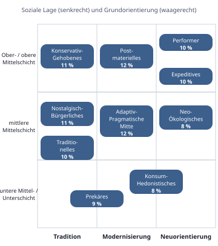

Soziale Milieus
Mit einem KI-Tutor lernen
Ein KI-Tutor erklärt dir diese Seite und hilft dir bei den Aufgaben. Wähl deinen Assistenten:
Mit Claude öffnen Mit ChatGPT öffnen Mit Mistral Vibe öffnen
Du nutzt dein eigenes Konto beim Anbieter. Der Assistent ist kein Angebot von lernapps.net: lernapps liefert nur Inhalte und Aufgaben. Die Wahl gilt für alle Seiten, nur auf diesem Gerät.
Kurz ausprobiert
Nach dieser Seite kannst du das Sinus-Modell erklären und Beschreibungen Milieus zuordnen.
Aufgabe
Lösung
etwas über Lebensstil und Werte richtige Antwort
Freizeit zeigt, was Menschen wichtig ist – genau darauf schauen Milieus.
nur etwas über ihre Körpergröße
Die Sportart sagt mehr über Lebensstil als über den Körper.
gar nichts
Freizeitverhalten hängt oft mit Werten, Einkommen und Bildung zusammen.
Milieus fassen Menschen mit ähnlichem Lebensstil und ähnlichen Werten zusammen.
Das steckt dahinter
- soziales Milieu
Eine Gruppe von Menschen mit ähnlicher Lebensauffassung und Lebensweise. Die Grenzen sind fließend.

Je höher ein Milieu, desto besser die Lage; je weiter rechts, desto moderner die Werte. Vereinfacht nach SINUS 2022.
Quelle: eigene Zeichnung. Lizenz: CC-BY-4.0.| Gruppe | Milieus |
|---|---|
| Leitmilieus | Konservativ-Gehobene, Postmaterielle, Performer |
| Zukunftsmilieus | Expeditive, Neo-Ökologische |
| Moderner Mainstream | Adaptiv-Pragmatische Mitte, Konsum-Hedonisten, Prekäre |
| Traditioneller Mainstream | Nostalgisch-Bürgerliche, Traditionelle |
Merke
- Zwei Achsen: soziale Lage und Grundorientierung.
- Neu gegenüber Schichten: Werte und Lebensstil.
- Grenzen fließend; Grundlage sind Interviews.
Jetzt du
Aufgabe
Lösung
Richtige Antwort: Gut gebildet, engagiert für Gemeinwohl, Nachhaltigkeit und Vielfalt. – Postmaterielles Milieu; Ältere Generation, liebt Sicherheit und Ordnung, eher kleinbürgerlich. – Traditionelles Milieu; Jung, urban, digital, kreativ, sucht neue und ungewöhnliche Erfahrungen. – Expeditives Milieu; Möchte dazugehören, kämpft mit Benachteiligungen und um Teilhabe. – Prekäres Milieu
Lage und Werte zusammen machen ein Milieu aus.
Aufgabe
Lösung
Richtige Antwort: 12 %
Die Adaptiv-Pragmatische Mitte gehört mit 12 % zu den größten Milieus, gleichauf mit den Postmateriellen.
Aufgabe
Lösung
Richtige Antwort: Die Aussage stimmt nicht.
Die Übergänge sind fließend. Darum überlappen sich die Felder in Milieu-Grafiken.
Offene Aufgabe
Erkläre in 2 Stichpunkten, was das Milieumodell von einem Schichtmodell unterscheidet.
Eine gute Antwort enthält:
Lösung
- Ein Schichtmodell ordnet Menschen nur nach Bildung, Einkommen und Beruf übereinander.
- Das Milieumodell nimmt dagegen auch Werte und Lebensstil dazu, deshalb gibt es Milieus nebeneinander auf gleicher Höhe.
Als Nächstes: Wie beschreiben Beck und Reckwitz die Gesellschaft heute?
Fehler gefunden oder eine Idee für diese App?